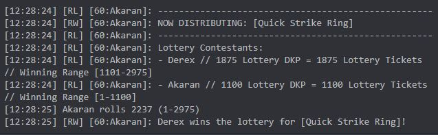

“TnT DKP” is our own take on DKP. It consists of two DKP phases: a “Priority” phase and a “Lottery” phase, followed by an Open Roll phase. Prior to the start of any given raid night, players designate which specific pieces of gear they desire from the Priority phase and Lottery phase by posting their “LootConfigs” in our DKP discord channel.
No. We track separate DKP for each content tier. Now that we have reached the end of Classic this means there are four content tiers of DKP: T1, T2, T2.5, and T3. T1 DKP is used to determine winners and spend for loot in Molten Core and Onyxia, T2 DKP is used for the same in Blackwing Lair, T2.5 for AQ40, and T3 for Naxx.
Now that we've reached the end of Classic, TnT is mainly a Naxx-Only guild. We clear Naxx once each week, and do AQ40, BWL, and an MC Binding run once every third Thursday. Since we still find ourselves stepping into the old content on occasion, it's important that we all still earn DKP to spend in the older content tiers. As such, we have tuned it so that each boss in Naxxramas awards T1, T2, T2.5, and T3 DKP. The specific DKP breakdown awarded at the end of a full clear of Naxxramas is as follows:
Within each content tier DKP table, we track two separate DKP values for each player: one for “Priority” DKP and one for “Lottery” DKP. When a player is awarded DKP for a given Content Tier (T1, T2, T2.5, T3), they are awarded both Priority and Lottery DKP for that Content Tier.
The values in the above breakdown might seem very bizarre, but they are tuned such that after our weekly 15% decay, each player comes out with slightly more than ½ the cost of an item for each raid tier. The weekly decay and cost of items are explained in more detail in later sections.
One final way to earn DKP is by attending the once-every-third-Thursday AQ40->BWL->MC Binding Run. Attending this raid awards 250 T3 Priority and Lottery DKP
All items in T1 content cost 1000 T1 DKP, with the only exception being the Ancient Petrified Leaf and the Mature Black Dragon Sinew, which cost 500 each (totaling 1000). All items in T2 content cost 2000 T2 DKP, all items in T2.5 content cost 3000 T2.5 DKP, and all items in T3 content cost 4000 DKP. The cost of items and weekly yield from doing all content are tuned such that it takes roughly two raid weeks before a player can afford their first piece of loot at Priority.
The only reason the costs vary in each content tier is because back in the earlier phases of the game when we were regularly running many different raids, the oldest raids were configured to award DKP for their content tier as well as higher content tiers (to incentivize attendnace of all raids by all players). Now that we're pretty much only doing Naxx this doesn't really matter, but the values remain as such.
When an item drops, it first goes through the Priority phase. Priority DKP operates exactly the same as classic DKP. The winner of this item is simply the player with the highest Priority DKP who has this item in their Priority Config. When the winner is determined, the item is looted to that player and the appropriate amount of Priority DKP is deducted immediately.
The Lottery phase is completely unique to our loot system. When an item is being distributed, if no players had that item in their Priority Config, a check is then done to see who has this item in their Lottery Config. For all players who have this item in their Lottery Config, a “Lottery” is initiated as such:

The Priority phase is intended to be an avenue to gear our raiders with main spec loot. We follow a basic intuition here regarding a sense of “main spec”. As such, it is left to the Officers to decide what is and is not acceptable for their players to place on their Priority list.
One caveat to this restriction on Priority loot is 2-Handers. 2-Handers are not BiS PvE for anyone in our raid. As such, we allow any of our players to put 2-Handers on their Priority LootConfigs if they so choose. Priority DKP is a very precious currency, so if the player wants a 2-Hander that badly - whether it’s for their PvP ranking or otherwise - that’s their choice, and they are fully empowered to do so.
The Lottery phase is unrestricted. It is how players can get items for PvP, or items for their off-specs, or just items for doing random things like dungeon farming or power leveling. The thinking here is relatively straightforward - no one can be upset about losing something for their main spec at Lottery to a player’s off-spec. If the item was that important to them, they should have put it on their Priority LootConfig.
If no one has a particular item on either Priority or Lottery, then it simply goes to Open Roll, where our only requirement is “you must plan on using it at some point for some purpose”. By “using it” we don’t necessarily mean in raid: you could intend to use the item to farm 5man content, or use it when your soloing in the world, or use it when PvPing – we don’t care, as long as you’re not going to DE or vendor it.
Yes, both Priority DKP and Lottery DKP can go negative, but going negative in each has different meaning.
In Lottery, going negative means that you will be reduced to a single ticket in the lottery. This does not mean that your Lottery DKP has a floor of 1, however. Your Lottery DKP can and will continue to go deeper and deeper into the negatives if you continue to win items with your 1 Lottery ticket. All this means is that it’ll take you longer to crawl out of your hole to be able to have more than 1 ticket in future lotteries.
In Priority, we actually enforce a rule whereby players cannot win items at Priority if they don’t have enough DKP to afford the cost up-front. However, for any such players who can’t afford the item but have it in their Priority config, when that item drops we go ahead and add the item to their Lottery Configs automatically (the AddOn handles this in real-time). This way, if only one player had this item on their Priority Config and they couldn’t afford it, if and when it moves onto the Lottery phase the player still has a shot at it. This change to the player’s Lottery Config is temporary, and will only be in affect for the current raid night.
Given the above rule, it shouldn’t be possible for a player to end up in the negatives in Priority DKP. However, there is one specific edge cases that could cause this, which is if the player is a designated recipient of a legendary and also happens to have near-zero Priority DKP for that content tier. Legendaries still carry a cost of a set amount of Priority DKP for their content tier, and that cost is going to be charged regardless of the recipient's current Priority DKP. More details on this can be seen in the "Can I place Eye of Sulfuras in my Loot Config?" section below."
Items are always distributed in ItemID order, ascending. The order in which items are distributed matters can drastically change the outcome of who gets what. If this isn’t obvious to you, consider the scenario where you and another Warrior have Quick Strike Ring (ItemID 18821) and Obsidian Edged Blade (ItemID 18822) in your Priority Configs. You currently have 100 more T1 Priority DKP than the other Warrior. We kill Magmadar and both items drop. Given our ItemID ascending distribution rule, we would distribute the ring first, resulting in you winning the ring and having 1000 T1 Priority DKP deducted. Then, we would distribute the Obsidian Edged Blade, resulting in the other Warrior getting the sword as he now has higher T1 Priority DKP than you. If, however, we had distributed the Obsidian Edged Blade first, the results would have been flip-flopped, and you would have received the sword and the other Warrior the ring. If the officer running the Master Looting for that raid night was particularly fond of you and knew that you really wanted the sword, maybe he/she would have opted to distribute the sword first just to ensure you got it. It’s important to us that we don’t introduce any bias like this into our loot system, so we choose to enforce consistency via ItemID.
No. In our guild, legendary items will always be decided via loot council. However, designated recipients will still be charged the standard cost of an item: 1000 T1 Priority DKP for Eye of Sulfuras, 500 T1 Priority DKP for each of the two bindings, and 100 T3 Priority DKP for each Splinter of Atiesh.
No, with one exception. Loot Config modifications close at 5:00PM PST on any raid nights. Any changes that come in after 5:00PM will be pulled in after the raid has concluded. There is one exception to this rule, however: if you have two items in your Loot Config for the same slot, where winning one might make you no longer desire the other, we allow you to remove the upcoming item(s) from your LootConfig during the raid. Here’s an example illustrating this with Mana Igniting Cord and Sash of Whispered Secrets for Shadow Priests/Warlocks.
Let’s say you are a Warlock and you have both Mana Igniting Cord and Sash of Whispered Secrets in your Priority Config. Let’s also say that you have 3000 T1 Priority DKP and the next highest Warlock/SPriest only has 1500 T1 Priority DKP. We kill Baron Geddon, Mana Igniting Cord drops, and you win it and get charged 1000 T1 Priority DKP. The raid moves along and kills Domo. Domo now drops Sash of Whispered Secrets. Well, you still have Sash of Whispered Secrets on your Priority Config and you still have more T1 Priority DKP than the other players with it in their Priority Config, so the AddOn determines that you should win it. Ideally, you should be able to inform the Officers so that you could have removed the Sash of Whispered Secrets from your Priority list upon receiving the Mana Igniting Cord to prevent gear going to waste.
To avoid this situation, the Master Looter who is running our TnTDKP AddOn can update players’ Loot Configs during the raid for this one specific circumstance. To do this, a player would need to whisper an Officer (any officer will do) immediately after receiving the initial piece of gear. In the above example, this would mean that once the Warlock received the Mana Igniting Cord, he/she would have to immediately reach out to an Officer to request removing Sash of Whispered Secrets from his/her Priority Config.
There are two distinctions between Core and Reserve raiders. The first is straightforward: being a Core Raider means that you have a preferred raid invite over Reserve Raiders.
The second distinction is when Priority loot is being distributed. Reserve raiders cannot take items via Priority DKP over Core raiders who have those items also in their Priority Configs, regardless of whether or not the Reserve raider has higher Priority DKP than the Core raider. The Core Raider must still have enough Priority DKP to afford the item in question, of course. This only affects Priority items - Core and Reserve raiders Lottery against each other just the same. Reserve raiders can still win items at Priority if there are no Core raiders with this item in their Priority Configs, or if the Core Raiders who do have the item in their Priority Configs don't have enough Priority DKP to afford it.
DKP “Decay” is a tool used by guilds to control the inflation of DKP. This is useful for making sure that newcomers can come in and have a reasonable shot at loot. As mentioned earlier, we track separate DKP for each content tier, which is now T1, T2, T2.5, and T3. Also as mentioned earlier, we track two types of DKP within each of those two content tiers: Priority and Lottery. This means that we effectively have 8 DKP tables: T1 Priority, T1 Lottery, T2 Priority, T2 Lottery, T2.5 Priority, T2.5 Lottery, T3 Priority, and T3 Lottery. We perform a weekly 15% decay across all eight tables on Monday each week. Negative values do not decay.
No. We take the values of the previous tier and perform a one-time squish to instantiate the DKP standings of the new raid tier. A “one-time squish” is basically just a way more drastic decay, and is performed as follows:
The result will be the DKP standings going into the new Content Tier. Note that after all of the scaling math has been performed, the DKP standings of the Current Content tier remain unchanged. The Current Content tier is only reduced via the standard Weekly 15% Decay.